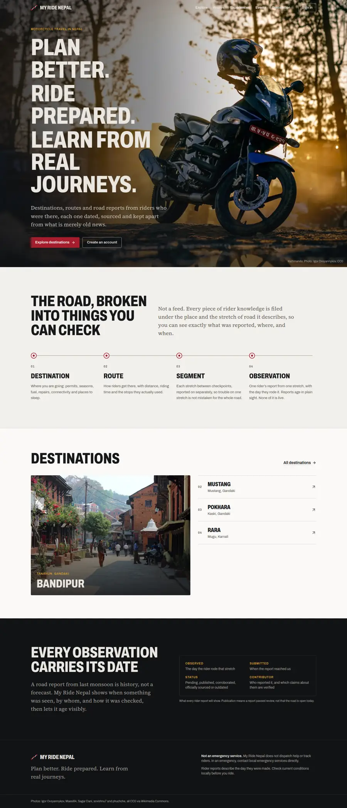
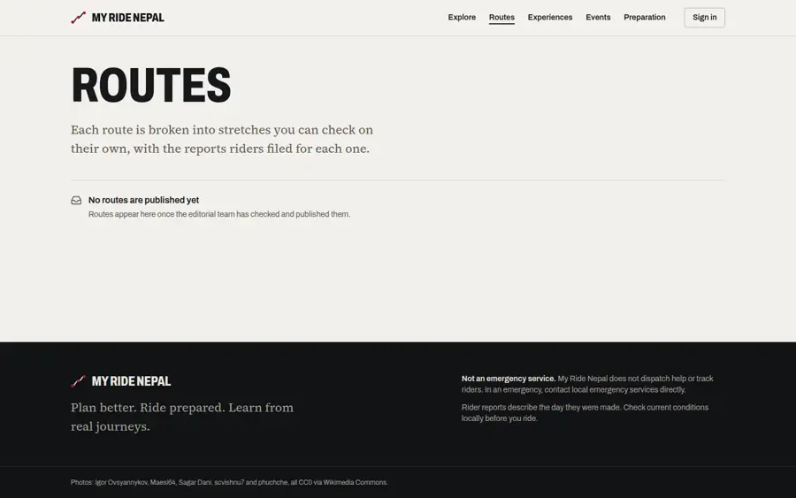
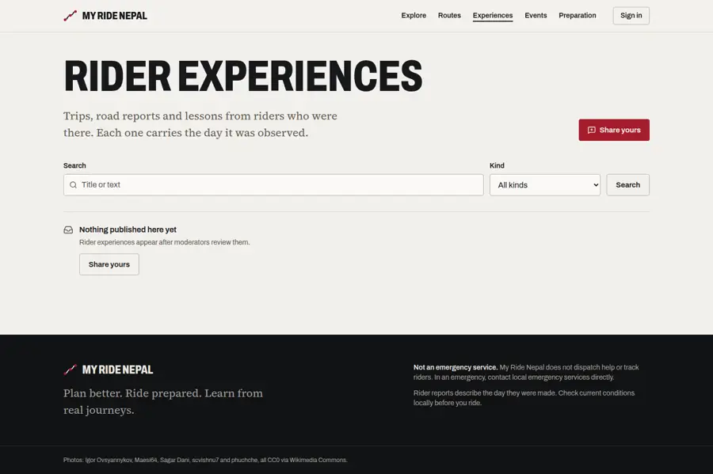
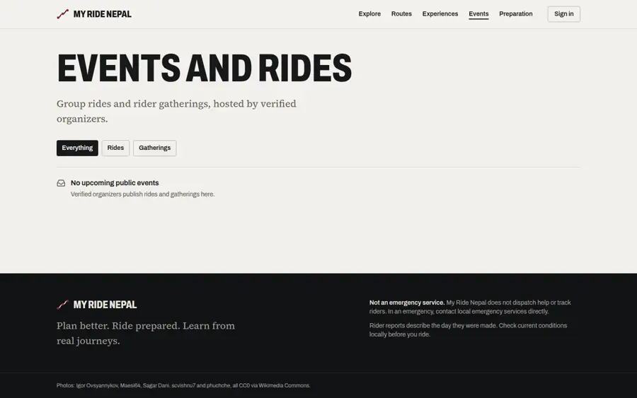
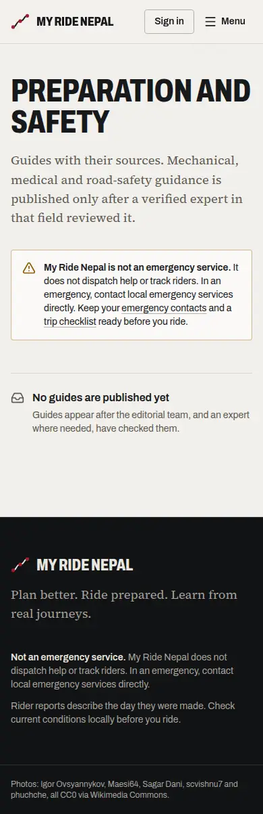
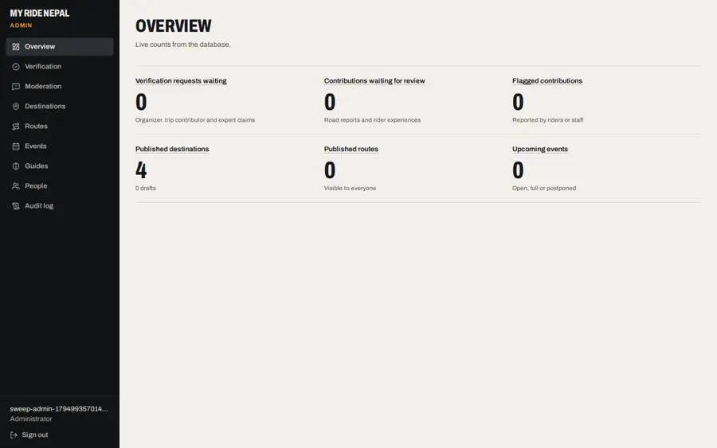
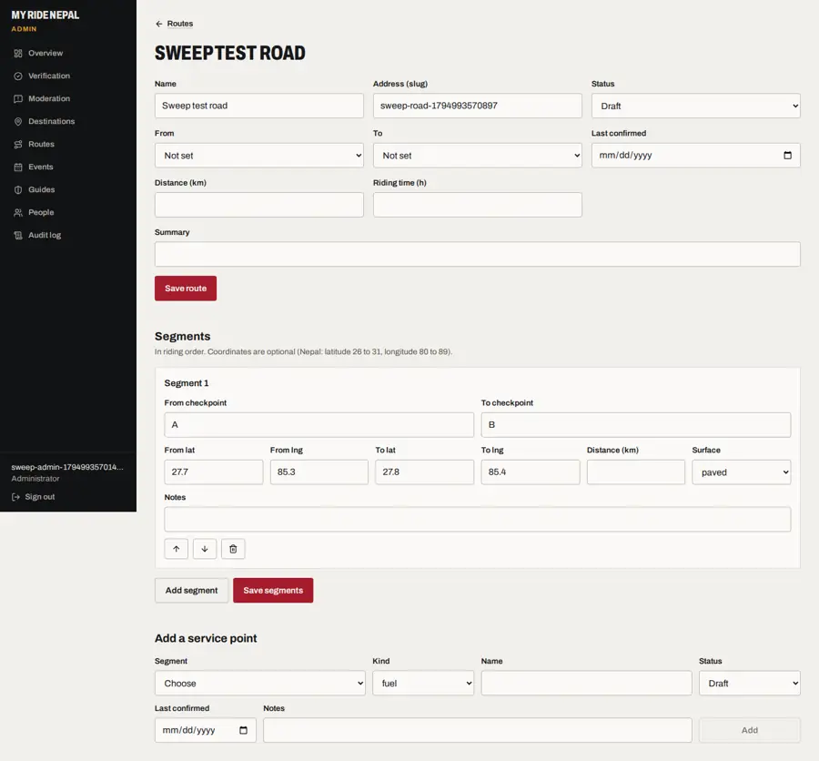
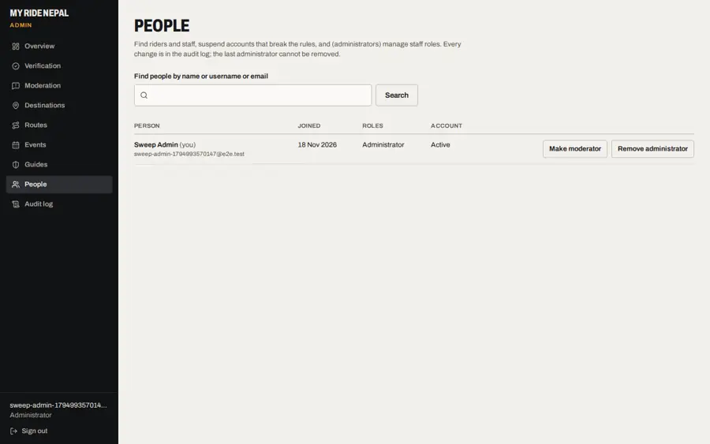

Session 04: Laravel 12 architecture and all agreed product areas
Objective
Replace the Supabase-client architecture with a Laravel 12 backend (Fortify, Sanctum, Scribe; axios in the SPAs), keep Supabase as local PostgreSQL only, and implement every previously agreed product area (destinations, routes, rider experiences, road reports, organizer verification, events and rides, preparation and safety, private and group trips, moderation, audit), with tests and documentation. Owner instructions: do not stop between stages; stop only for remote access, destructive operations, credentials, money, irreversible actions or unresolvable architecture conflicts.
Initial state
web held the public Vue SPA using Supabase directly; admin the staff Vue SPA using Supabase; database rules in Supabase RLS. Both repos had been pushed by the owner. admin/.env held a remote database password and was not ignored; the owner had already added the ignore rule when it was checked (verified: never committed, never staged).
Architecture decisions
- Laravel 12 (12.73) in
web, as instructed (not 13). Fortify 1.43 with its routes registered manually under/api/v1/auth; custom sign-up and email-link sign-in to keep the existing flow (no session until confirmed). Sanctum 4.5 SPA cookie sessions. Scribe 5.11 docs (no response calls). - Frontend placement: the first brief put all Vue code in
admin. Mid-session a peer Claude session ("road-trip-87") reported an owner decision to the contrary. It contradicted an explicit instruction, so the owner was asked directly and chose: public site inweb(own Vite build, no Inertia),adminstaff-only. The merged structure was reversed from a snapshot. - Database: new databases
myridenepal/myridenepal_testbeside the untouched Supabasepostgresdatabase; rolesmrn_owner(migrations) andmrn_app(requests: DML only, no RLS bypass, cannot change audit rows). Laravel migrations are the single authority; Supabase SQL archived. - No RLS (owner decision): policies and actions in Laravel; integrity in constraints (checks, FKs, partial unique index for open claims, restrict-delete for reported segments).
- Serving: Laravel serves the built SPA and the API on one origin; Vite dev servers proxy
/api; the admin build is to be served behind a proxy to the same API. - Supabase services: auth, API gateway (Kong), PostgREST disabled; only Postgres and Mailpit run (~65 MB RAM).
- Not added: Pinia, Redis, GSAP, Spatie permissions (not needed yet; documented as future options).
Built
| Area | Backend | Web SPA | Admin SPA |
|---|---|---|---|
| Auth | sign-up, email link, login, logout, forgot/reset, change password, confirm password, sessions list/revoke, idle + absolute expiry, rate limits | sign in/up, forgot/reset, account security | staff sign-in, no-access |
| Verification | apply, decide (state machine, reasons, no self-review), notifications, audit | apply, claim list with reasons | queue, claim detail with history |
| Explore / Routes | destinations, routes, segments, service points, staff CRUD, freshness dates | explore, destination, routes list, route with Leaflet map and per-stretch reports | destinations, routes, segment editor, service points |
| Experiences / road reports | 8 contribution kinds, progressive fields, photos (validated, re-encoded), reports and auto-flagging, moderation | library with search and filters, detail, contribute form, rider profiles | moderation queue |
| Events and rides | organizer-only hosting, public/private, instant/approval joining, invitations, capacity lock, waitlist promotion, updates, postponement/cancellation notices, attendance, staff cancellation | list, detail, host form, organizer workspace | events oversight |
| Preparation and safety | guides with sources; safety categories need a matching expert review; edits clear it; emergency contacts | guides, guide detail with expert review action, emergency contacts | guides editor and publish |
| My Rides | personal and group trips: members (owner/editor/viewer), stops, expenses, checklist | trip list and workspace | no access (private) |
| Staff | roles (admin + password confirmation, last admin kept), suspension, audit log, overview | people, audit log, overview |
Screenshots








Tests (final run)
| Check | Result |
|---|---|
Laravel feature tests on PostgreSQL (php artisan test) | 55 passed, 381 assertions |
composer audit | no advisories |
| Web SPA: vue-tsc, oxlint, eslint, Vitest, build | pass, 6/6 unit tests |
| Admin SPA: vue-tsc, oxlint, eslint, Vitest, build | pass, 12/12 unit tests |
pnpm audit --prod (both) | clean except 1 documented build-time advisory with no upstream fix (not in bundles) |
| Web E2E (auth, verification, road report, events with waitlist, group trip) in Chromium, Firefox, Pixel 7 | 27 passed (9 tests × 3 projects) |
| Admin E2E (access, verification decisions, roles with password confirmation, audit, moderation) in Chromium, Firefox | 16 passed (8 tests × 2 projects), twice in a row. A first full run had 1 Firefox failure, traced to the auth rate limiter sharing one bucket for all password confirmations from one IP; now keyed per account |
| Browser sweep: 13 public pages × 390/768/1440, 10 admin pages × 390/1440 | 0 overflow, 1 h1 each, no console errors except one real 404 |
| Supabase bcrypt compatibility with a real GoTrue hash (disposable local accounts, deleted) | verifies; re-hashed to Argon2id on first login |
| App DB role cannot change schema or audit rows | tested |
| WebKit, screen reader, axe, Lighthouse, CI on GitHub | not run (system libraries need sudo; manual/owner steps) |
Problems and failed attempts
web/.env.local(old Vite file) replaced.envunderAPP_ENV=local: Laravel fell back to SQLite. Moved into the SPA folder.- Reset-link endpoint leaked account existence ("We can't find a user…"): Fortify resolves its response with arguments, so the override needed a class binding. Fixed and tested.
- Email confirmation link failed when opened from a mail client (no SPA headers, no session): given the
webmiddleware; regression test added. - Deleting a route segment with road reports violated a database check (500): now refused with a clear message; FK changed to restrict.
- Production build: CSP blocked the SPA page and Vite prefixed public images with
/app/; both fixed and verified in a browser. - Smaller:
whereILikedoes not exist; base controller lackedAuthorizesRequests; a route name prefix; test-harness guard switching; a<script setup>export; pnpm 12 audit config location; Kong still starting.
Security considerations
- Remote Supabase project never contacted. Database passwords live only in git-ignored
web/.env; the owner's existing remote lines there were kept untouched. - Cookie sessions only (no tokens in localStorage), CSRF on every state change, exact-origin CORS, security headers, Argon2id, generic auth answers, rate limits, policy checks on every endpoint, parent-scoped lookups against IDOR, upload content validation and EXIF stripping, append-only audit, least-privilege DB role.
- Open: CAPTCHA, staff MFA, account deletion/export, external security review, production HTTPS settings.
Remaining
- Offline Ride Pack (PWA) not built (not in this session's scope list; recommended for approval).
- No real content (destinations beyond 4 dev seeds, routes, guides) by design: it must come from qualified people.
- Verification track and deployment items in
docs/architecture/DEPLOYMENT_READINESS.md.